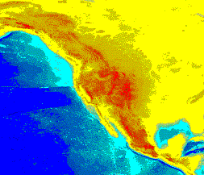
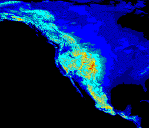
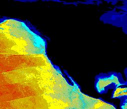

Please see The HDF Group's new Support Portal for the latest information.
The HDF5 Image API defines a standard storage for HDF5 datasets that are intended to be interpreted as images. This version of the API is primarily concerned with two dimensional raster data, which are indexed 8 bit images (an image in which each pixel stored is an index into a table palette), and 24 bit true color images (an image where the pixel storage contains 3 color planes, red , green , blue, in this case)
Writing Indexed Images and Palettes
To write an HDF5 indexed image the H5IMmake_image_8bit
function is used:
H5IMmake_image_8bit (file_id, "Image1", width, height, data);
This function accepts a parameter file_id, obtained from the
basic HDF5 library function H5Fcreate, a dataset name, the width
and height of the dataset, and the data. This function is most useful when
associated with a palette.
The following table represents a palette with 9 entries:
| Index | RGB components | Color representation |
| 0 | 0, 0, 168 | |
| 1 | 0, 0, 252 | |
| 2 | 0, 168, 252 | |
| 3 | 84, 252, 252 | |
| 4 | 168, 252, 168 | |
| 5 | 0, 252, 168 | |
| 6 | 252, 252, 84 | |
| 7 | 252, 168, 0 | |
| 8 | 252, 0, 0 |
To create an HDF5 palette the H5IMmake_palette
function is used:
H5IMmake_palette (file_id, "Palette1", pal_dims, pal);
This function accepts a parameter file_id, obtained from the
basic HDF5 library function H5Fcreate, a palette name, the
dimensions of the palette, and the palette data. To associate a palette to any given image the function H5IMlink_palette is used:
H5IMlink_palette (file_id, "Image1", "Palette1");
This call associates the previously written "Image1" with the palette "Palette1".
PROGRAMMING EXAMPLE
The following example demonstrates how to create an indexed HDF5 image with an associated palette.
-
[ C Example ] --
ex_image1.c
Writing True Color Images and Reading Images
To write an HDF5 true color image the H5IMmake_image_24bit
function is used:
H5IMmake_image_24bit (file_id, "Image1", width, height, interlace, data);
This function accepts a parameter file_id, obtained from the
basic HDF5 library function H5Fcreate, a dataset name, the width
and height of the dataset, a string with the interlace mode and the data.
To read an HDF5 image the H5IMread_image function is used:
H5IMread_image (file_id, "Image1", data);
This function accepts a parameter file_id, obtained from the
basic HDF5 library function H5Fopen, a dataset name, and the data. To obtain information about the image (for example to know the size of the
buffer to allocate for the image data), the H5IMget_image_info
function is used:
H5IMget_image_info (file_id, "Image1", &width, &height,
&planes, interlace, &npals);
This function accepts a parameter file_id, obtained from the
basic HDF5 library function H5Fopen, a dataset name, and returns the width
and height of the dataset, the number of color planes, the interlace mode, and the
number of palettes.
PROGRAMMING EXAMPLE
The following example demonstrates how to create indexed and true color HDF5 images. The example uses realistic image data read from ASCII files. The corresponding HDF5 file that is generated is also referenced here. You can use an HDF5 file browser that handles HDF5 images to access this file by clicking on the link below.
|
8 bit raster image. |
24 bit raster image. |
{kind=link}
PROGRAMMING EXAMPLE
The following C program provides an examples of how to generate HDF5 image data from floating point data. In the example, real life topographic data (from the North American hemisphere) is used. In the dataset sea values are represented as negative numbers and land values are represented as positive numbers. The example generates 3 HDF5 images, one that generates an image from all the values, another that generates an image from the land values and another that generates an image from the sea values.
The images obtained are:
| 
Processing all the data. |

Processing the land data. |

Processing the sea data. |
{kind=link}
{kind=link}
{kind=link}
{kind=link}
Palettes
A palette is the means by which color is applied to an image and is also referred to as a color lookup table. It is a table in which every row contains the numerical representation of a particular color. In the example of an 8 bit standard RGB color model palette, this numerical representation of a color is presented as a triplet specifying the intensity of red, green, and blue components that make up each color.
Like an HDF5 image, an HDF5 palette is an HDF5 dataset written with standard
attributes conforming to the HDF5
Image and Palette Specification. The programming model is similar to the
HDF5 image model. To create an HDF5 palette the H5IMmake_palette
function is used:
H5IMmake_palette (file_id, "Palette1", pal_dims, pal);
This function accepts a parameter file_id, obtained from the
basic HDF5 library function H5Fcreate, a palette name, the
dimensions of the palette, and the palette data. To associate a palette to any given image use the function H5IMlink_palette:
H5IMlink_palette (file_id, "Image1", "Palette1");
To read an HDF5 palette use the H5IMread_image function:
H5IMget_palette( file_id, "Image1", pal_number, data );
This function accepts a parameter file_id, obtained from the
basic HDF5 library function H5Fopen, a dataset name, a palette
index number, and the data.
Images and palettes are HDF5 datasets, and can be deleted from an HDF5 file using the basic HDF5 API functions. Please refer to this API for further information.
- - Last modified: 31 January 2017